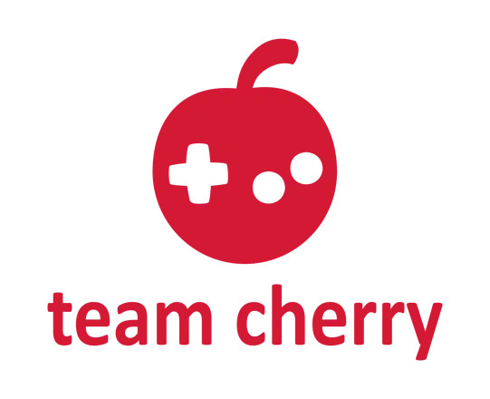

Development and design
Team Cherry is a young team, but the history of the studio began a long time ago. Its founders, animator Ari Gibson and game designer William Pellen, met about 15 years ago through mutual friends, but for a long time they didn’t really communicate with each other.
In 2013, Pellen, who worked as a web designer, became interested in developing platformers. One day Gibson, who was working in the cinema at that time, invited William to participate in the Ludum Dare game jam.
The jam theme sounded like “10 seconds”. Then the guys came up with Hungry Knight – a small arcade game in which the player wandered around a small arena and killed enemies. Ten seconds were given for each kill – if the player did not have time to reach the enemy and kill, then the character died and the game started anew.
They decided to work on a larger project. At first, they created the game together, then the guys found two more colleagues – technical programmer Dave Kazi and composer Chris Larkin.
Contrary to the constant comparisons between Hollow Knight and Dark Souls, the developers were not inspired by the development of FromSoftware at all. The main muses of the project are old NES platformers: Mario, Faxanadu, The Legend of Zelda, Mega Man, Castlevania and, of course, Metroid. And initially the game was not even conceived as a metroidvania, it came later.
The first thing Ari and William worked out in detail was the movements of the hero. When they realized what the knight would be capable of, they began to create a space for him.
First, the guys completely made the first location of the game – Forgotten Crossroads. They put all their strength into it, made enemies, bosses, thought out upgrades that can be obtained in this location. Forgotten Crossroads has become a standard for authors to follow when creating all other locations. Each level should be of the same quality, the same elaborate.
Having set a high bar for themselves, the developers eventually made the subsequent levels even better than the first, so many fans of the game note that in the later stages Hollow Knight only becomes more interesting.
In addition, the full study of the starting level, in fact, helped Ari and William realize what their game would be like in general.
“We put three mini-bosses in the first location – and realized that we had to make as many of them as possible. And we did! It turned out great, and it pushed us to move on,” the authors recall.
Sometimes, however, they could not adequately calculate their strength. For example, the guys liked the idea of making the backgrounds multilevel – it created a sense of depth and reality of the game world. But it’s one thing to draw the background of a specific location, and quite another to do it for all levels of the game. “As a result, we spent months of work on this – just to make the backgrounds of all levels similar in quality,” says Ari Gibson.
However, the authors saved time on the characters, which they decided to leave two-dimensional. Gibson managed to draw several characters in one day.
The final six months of game development consisted of the following – Gibson or Pellen sat on the couch, just played and shouted to a colleague: here’s a bug, here’s where you need to finalize. Now William and Ari did not compare locations with the starting one, but evaluated them in the context of the whole game.
It was a period of constant small edits and intensive testing. If some part of the location turned out to be too simply arranged, a secret place could be added there. If there was a long period without fights, it was possible to introduce a meeting and a conversation with an NPC into it.
No one outside the studio has touched the game in these six months. Constant testing was exhausting, but every improvement was a small victory for the guys. Only after that, Team Cherry decided to release a project that was waiting for critical acclaim, the love of players and more than a million copies sold.
Below is the interview with Team Cherry at TGS 2017: